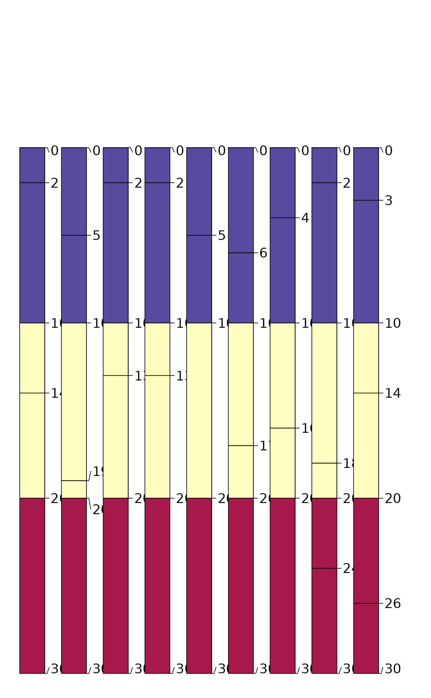
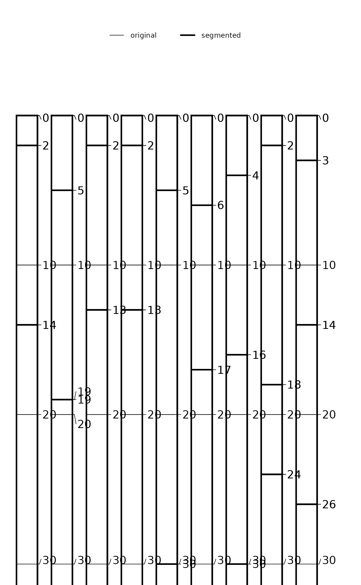

This function segments or subdivides horizon data from a SoilProfileCollection or data.frame by depth interval (e.g. c(0, 10), c(0, 50), or 25:100). This results in horizon records being split at the specified depth intervals, which duplicates the original horizon data but also adds new horizon depths. In addition, labels (i.e. "segment_id") are added to each horizon record that correspond with their depth interval (e.g. 025-100). This function is intended to harmonize horizons to a common support (i.e. depth interval) for further aggregation or summary. See the examples.
Arguments
- object
either a
SoilProfileCollectionordata.frame- intervals
a vector of integers over which to slice the horizon data (e.g.
c(25, 100)or25:100)- trim
logical, when
TRUEhorizons inobjectare truncated to the min/max specified inintervals. WhenFALSE, those horizons overlapping an interval are marked as such. Care should be taken when specifying more than one depth interval andtrim = FALSE.- depthcols
a character vector of length 2 specifying the names of the horizon depths (e.g.
c("top", "bottom")), only necessary ifobjectis a- hzdepcols
deprecated being replaced by depthcols.
Value
Either a SoilProfileCollection or data.frame with the original horizon data segmented by depth intervals. There are usually more records in the resulting object, one for each time a segment interval partially overlaps with a horizon. A new column called segment_id identifying the depth interval is added.
Details
hz_segment() performs no aggregation or resampling of the source data, rather, labels are added to horizon records for subsequent aggregation or summary. This makes it possible to process a very large number of records outside of the constraints associated with e.g. slice() or slab().
Examples
# example data
data(sp1)
# upgrade to SPC
depths(sp1) <- id ~ top + bottom
# segment and trim
z <- hz_segment(sp1, intervals = c(0, 10, 20, 30), trim = TRUE)
# display segment labels
# note that there are new horizon boundaries at segments
par(mar = c(0, 0, 3, 1))
plotSPC(z, color = 'segment_id', width = 0.3)

# highlight new horizon records
par(mar = c(0, 0, 2, 1))
plotSPC(z, color = NA, default.color = NA, width = 0.3, lwd = 1)
plotSPC(sp1, color = NA, default.color = NA,
width = 0.3, lwd = 3, add = TRUE, name = NA, print.id = FALSE)
#> [P001:6] horizon with top == bottom, cannot fix horizon depth overlap
#> consider using repairMissingHzDepths()
legend('top', horiz = TRUE,
legend = c('original', 'segmented'),
lwd = c(1, 3), cex = 0.85, bty = 'n')

# \donttest{
# same results as slab()
# 10 random profiles
s <- lapply(1:10, random_profile, n_prop = 1, SPC = TRUE, method = 'random_walk')
s <- combine(s)
a.slab <- slab(s, fm = ~ p1, slab.structure = c(0, 10, 20, 30), slab.fun = mean, na.rm = TRUE)
z <- hz_segment(s, intervals = c(0, 10, 20, 30), trim = TRUE)
z <- horizons(z)
z$thick <- z$bottom - z$top
a.segment <- sapply(split(z, z$segment_id), function(i) {
weighted.mean(i$p1, i$thick)
})
res <- data.frame(
slab = a.slab$value,
segment = a.segment,
diff = a.slab$value - a.segment
)
print(res)
#> slab segment diff
#> 00-10 -5.305852 -5.305852 8.881784e-16
#> 10-20 -2.212883 -2.212883 0.000000e+00
#> 20-30 -4.091390 -4.091390 0.000000e+00
res$diff < 0.001
#> [1] TRUE TRUE TRUE
# }
data(sp5)
# segment by upper 25-cm
test1 <- hz_segment(sp5, intervals = c(0, 100))
print(test1)
#> SoilProfileCollection with 296 profiles and 1254 horizons
#> profile ID: soil | horizon ID: hzID
#> Depth range: 70 - 100 cm
#>
#> ----- Horizons (6 / 1254 rows | 10 / 20 columns) -----
#> soil hzID top bottom name sand silt clay R25 G25
#> soil1 1 0 8 H1 32.3 10.9 52.8 0.41 0.38
#> soil1 2 8 25 H2 29.0 11.2 58.2 0.31 0.28
#> soil1 3 25 55 H3 34.9 11.6 51.9 0.31 0.28
#> soil1 4 55 100 H4 38.2 10.9 49.7 0.31 0.28
#> soil10 5 0 10 H1 25.2 14.4 58.4 0.43 0.37
#> soil10 6 10 25 H2 24.4 14.9 59.0 0.44 0.37
#> [... more horizons ...]
#>
#> ----- Sites (6 / 296 rows | 1 / 1 columns) -----
#> soil
#> soil1
#> soil10
#> soil100
#> soil101
#> soil102
#> soil103
#> [... more sites ...]
#>
#> Spatial Data:
#> [EMPTY]
nrow(test1)
#> [1] 1254
print(object.size(test1), units = "Mb")
#> 0.3 Mb
# segment by 1-cm increments
test2 <- hz_segment(sp5, intervals = 0:100)
print(test2)
#> SoilProfileCollection with 296 profiles and 29523 horizons
#> profile ID: soil | horizon ID: hzID
#> Depth range: 70 - 100 cm
#>
#> ----- Horizons (6 / 29523 rows | 10 / 20 columns) -----
#> soil hzID top bottom name sand silt clay R25 G25
#> soil1 1 0 1 H1 32.3 10.9 52.8 0.41 0.38
#> soil1 2 1 2 H1 32.3 10.9 52.8 0.41 0.38
#> soil1 3 2 3 H1 32.3 10.9 52.8 0.41 0.38
#> soil1 4 3 4 H1 32.3 10.9 52.8 0.41 0.38
#> soil1 5 4 5 H1 32.3 10.9 52.8 0.41 0.38
#> soil1 6 5 6 H1 32.3 10.9 52.8 0.41 0.38
#> [... more horizons ...]
#>
#> ----- Sites (6 / 296 rows | 1 / 1 columns) -----
#> soil
#> soil1
#> soil10
#> soil100
#> soil101
#> soil102
#> soil103
#> [... more sites ...]
#>
#> Spatial Data:
#> [EMPTY]
nrow(test2)
#> [1] 29523
print(object.size(test2), units = "Mb")
#> 5.9 Mb
# segment and aggregate
test3 <- hz_segment(horizons(sp5),
intervals = c(0, 5, 15, 30, 60, 100, 200),
depthcols = c("top", "bottom")
)
test3$hzthk <- test3$bottom - test3$top
test3_agg <- by(test3, test3$segment_id, function(x) {
data.frame(
hzID = x$hzID[1],
segment_id = x$segment_id[1],
average = weighted.mean(x$clay, w = x$hzthk)
)
})
test3_agg <- do.call("rbind", test3_agg)
head(test3_agg)
#> hzID segment_id average
#> 000-005 1 000-005 40.31517
#> 005-015 1 005-015 41.89718
#> 015-030 2 015-030 43.88592
#> 030-060 3 030-060 46.01368
#> 060-100 4 060-100 47.65180
#> 100-200 5 100-200 48.13381